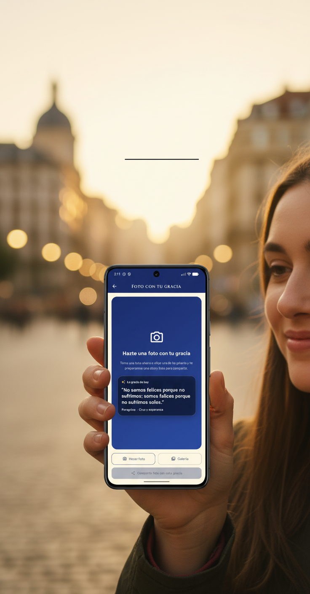
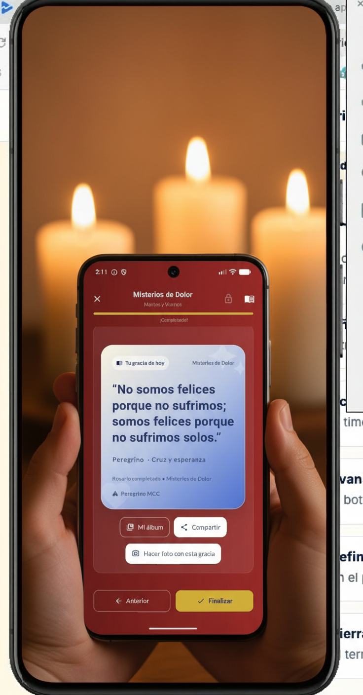

Rezar también puede ser visible
No para presumir. Sino para sembrar.
No para presumir. Sino para sembrar.

Una frase. Un momento. Una luz que puedes compartir.
La fe no se impone. Se propone. Y hoy también se comparte.
Un clic puede abrir conversaciones que nunca imaginaste.
En casa. En una cafetería. En silencio. Pero conectado.

No somos felices porque no sufrimos; somos felices porque no sufrimos solos.
Si esto te ha removido algo… no lo guardes en el bolsillo.
Vive tu fe cada día. Y deja que otros vean que Cristo sigue vivo.
Instalar ahoraDe Colores.